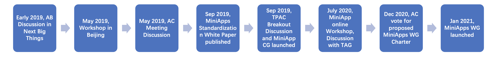

Mini-apps chartering and the TAG
Angel Li, Alibaba; Yves Lafon, W3C; Yongjing Zhang, Huawei; Fuqiao Xue, W3C; Ming Zu, Baidu
Goals
- MiniApps is a successful mean to deploy apps to the public
- It is possible to deploy MiniApps based on the Web Platform
Some Background
- MiniApp: a new form of hybrid application, leveraging both Web technologies (especially CSS and JavaScript) as well as capabilities of native applications. Originated from China in early 2017.
- It runs within a user agent such as native app, Web browser, or operating system.
- The beauty of MiniApps:
- For users: install-free, handy to use, friendly UI and rich functionalities, support offline use
- For developers: new playground for innovation, leverage the functionality modules of Hosting App/OS, less costs
MiniApps in the Globe
- In China:
- Transforming the business model and the market
- Industry application: retail, take-out service, health care, e-gov, online education, transportation, etc
- About 20 MiniApps platforms (Alipay, Baidu, Huawei, Xiaomi, etc), 7.5 million MiniApps, 850 million users, still growing
- In Asia: Miniapps start to get known in Japan and Korea, e.g. Line released its MiniApp products in 2019
-
CJK MiniApp online forum on April 8th
- In the globe, MiniApp-like products emerge in some platforms, e.g. app stores
Will the walled garden happen again among MiniApp ecosystems?
MiniApps Standardization in W3C
History of MiniApp Standardization in W3C
 May 2019, Workshop in Beijing -> May 2019 AC Meeting Discussion -> Sep 2019, MiniApps Standardization White Paper published -> Sep 2019, TPAC Breakout Session and MiniApp CG launched -> July 2020, MiniApp online Workshop, Discussion with TAG ->Dec 2020, AC vote for proposed MiniApps WG Charter -> Jan 2021, MiniApps WG launched">
Goals of MiniApps WG
- harmonize the heterogeneous MiniApp ecosystem,
- enable interoperability among the different MiniApp platforms,
- maximize the convergence of MiniApps and the World Wide Web,
- reduce the development costs and facilitating the adoption of this technology.
MiniApps CG Work Overview

| # |
MiniApp Specs (incubated in CG) |
Transferred to WG |
TAG Reviewed |
| 1 |
MiniApp URI Scheme |
Note |
Y |
| 2 |
MiniApp Packaging |
Normative |
informally |
| 3 |
MiniApp Manifest |
Normative |
Y |
| 4 |
MiniApp Widget Requirements |
Note |
N |
| 5 |
MiniApp Lifecycle |
Normative |
Y |
MiniApp Packaging & Manifest (Normative)

MiniApp Lifecycle (Normative)

To Do:
- Define "first render"
- Web IDL for the Lifecycle API
MiniApp Addressing (WG Note)

TAG Review
The TAG reviewed the following points
And informally about MiniApp Packaging
Then Team effort to build on TAG's feedback.
To Sum Up
- MiniApp standardization explores the interoperability between Web and new forms of applications.
- It is a global effort.
- We incubate the new ideas in MiniApp Ecosystem Community Group and standardize them in MiniApps Working Group.
- Welcome to join!
This is a template for slides for AC 2021. To start the slide show, click on a slide or press Shift+F5 (Shower); or double click or press ‘A’ (b6+). For usage instructions, see at the end.